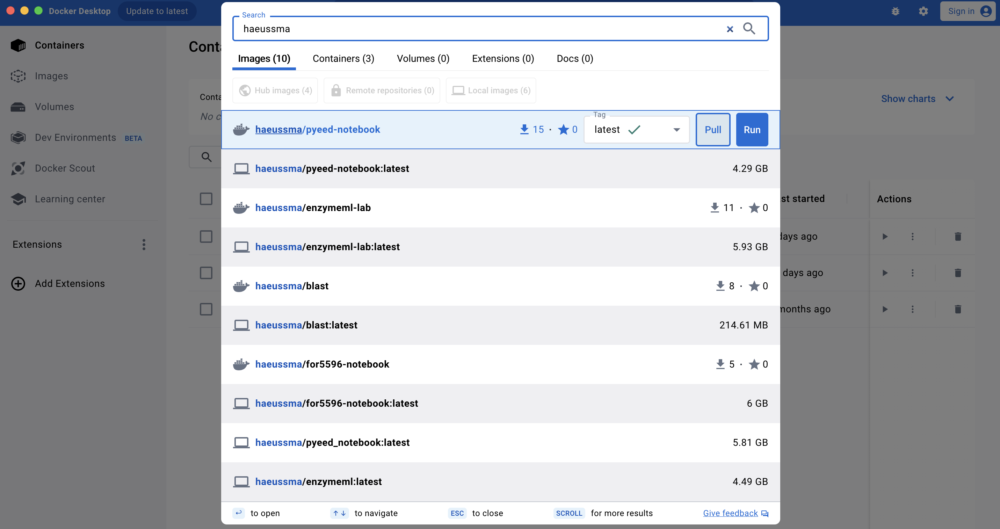
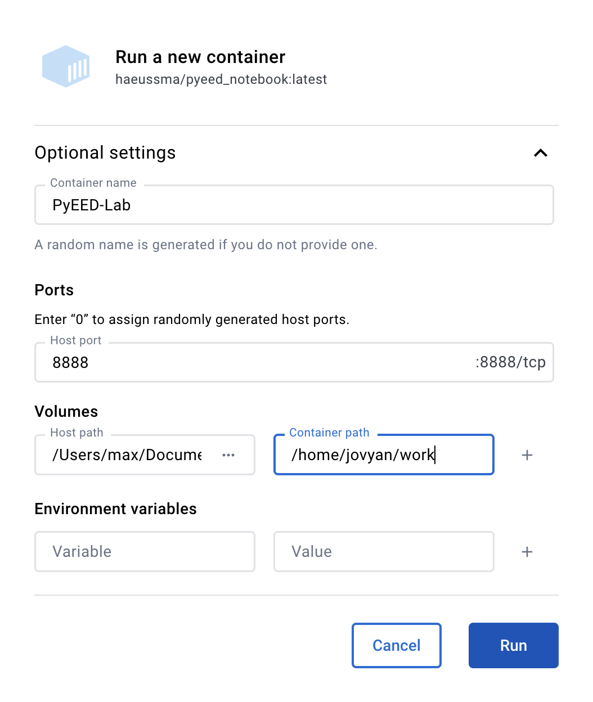

Setting up JupyterLab
What is JupyterLab?
JupyterLab is a web-based editor for writing and executing Jupyter Notebooks. Additionally, it allows you to see the file system, terminal, and other tools in the same window.
Initial Setup
-
Install Docker
-
Open the Docker Desktop application search for
haeussma/pyeed-notebookin the upper search bar and click onPull.}
-
Navigate to the
Imagessection in the Docker Desktop application and click on next to thehaeussma/pyeed-notebookimage. ARun a new containerwindow pops up. Click onOptional settingsto configure the container with the following settings:Container name- Container name:
PyEED-Lab Ports- Host port:
8888
VolumesWhy specify a volume?
The volume is used to define what directory of your local machine is visible to the container. Without this configuration, the container would not be able to access your local files. It is advised to make the directory in which you store your data for analysis.
- Host path:
{SELECT YOUR WORKING DIRECTORY} - Container path:
/home/jovyan/work
Example

Then, click on
Run. The initial configuration process for the container might take a few seconds up to five minutes. -
Click on the link
8888:8888in the header of the container. This will open a new tab in your browser, showing the JupyterLab environment.
-
üéâ You are now in the JupyterLab environment. Your local files can be accessed via the
workfolder.
Stopping the Container
To start the container, navigate to the Containers section in the Docker Desktop application and click on the button next to the PyEED-Lab container. Running containers are symbolized by a green container icon. You can close the browser window whenever you want. The container will keep running in the background unless you stop it in the Docker Desktop app.
Restarting the Container
To start the container, navigate to the Containers section in the Docker Desktop application and click on the button next to the PyEED-Lab container. Then click on the blue port number 8888:8888 next to the start button.